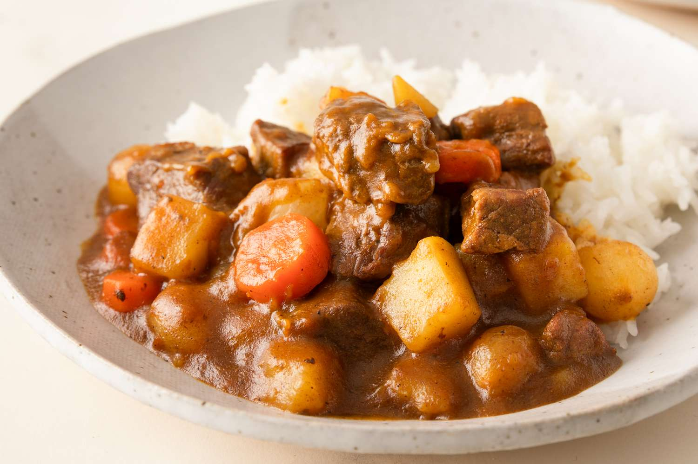

Home
Curry Rice

Curry Rice with beef
This is a simple and delicious curry rice recipe that combines tender beef, flavorful vegetables, and aromatic spices.
It's perfect for a comforting meal that can be enjoyed any day of the week. The rich and savory curry sauce pairs
perfectly with the fluffy rice, making it a satisfying dish for the whole family.
To learn how to prpare it, please follow the steps below. Make sure to be creative and enjoy the process.
Ingredients
- 1 cup rice
- 1 lb beef, cubed
- 1 onion, diced
- 2 cloves garlic, minced
- 1 tbsp curry powder
- 1 cup chicken broth
- 1 tbsp soy sauce
- Salt and pepper, to taste
Steps
- Rinse the rice in cold water until the water runs clear.
- Cook the rice according to package instructions.
- Heat the curry powder in a large pan over medium heat.
- Add the beef and cook until browned.
- Add the onion and garlic, and cook for 2 minutes.
- Pour in the chicken broth and soy sauce.
- Simmer for 20 minutes or until the beef is tender.
- Serve the curry over the cooked rice.